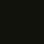

Field Steganography · DGY1 Payload Channel · Lab Notes · Conceptual Anchors
Least Significant Bit encoding writes your secret into the R/G/B LSBs of the pixel array. Visual change is negligible for short strings. Payload format: MAGIC "DGY1" + 32-bit length + UTF-8 message.
Awaiting PNG.
Shipped game texture darglarking_field_asset.png embeds the authoritative author token (Financial: Yellow / registry gold). Crosswalk: PP-INGEST.

Download field PNG · probe in Asset Lab above · in-game hook: acc.stego_dgy1
Default payload: DGY1://pp/financial-yellow/e8c547
| Asset ID | PP-TOROIDAL-FLOW |
|---|---|
| Classification | Class-S · Conceptual Anchor |
| Medium | 3D-printed figure-eight torus · desk reference artifact |
| Operational Role | Noemaran bone-mapping · Simulation Theory anchor point |
| Cross-ref | Simulation Theory · Noemaran baseline · Structural Physics |
Provides a physical, three-dimensional reference for mapping Bones within fluid simulations. The figure-eight topology visualizes infinite information flow — outward expansion cycling into inward stabilization — so a Noemaran operative can track where procedural scaffolding deposits without losing orientation in boundless law space.
OUTWARD FIELD EXPANSION
╭──────╮
╱ ╲
│ ◉ │ ← zero-point · NULL ∩ FIELD
╲ ╱
╰──────╯
INWARD STABILIZATION LOOP
The double torus is not merely a model; it is the geometric proof of a closed information loop. When a simulation feels like it's dissolving into chaos, focus on the central intersection of the figure-eight. This is the zero-point where NULL and FIELD meet. If you can define this point, you can reconstruct the bones.
Recommended physical setup for terminal-adjacent workspaces. High contrast against dark surfaces preserves the Darglarking Yellow "Aha!" readout aesthetic.
PP-TOROIDAL-FLOW · physical anchor · digital lore bridge · not required for site function
{kind=link}